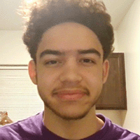

About Me
Hello! My name is Filiberto Nieves IV! I am a Game Design and Development Major at RIT and I am currently in my 2nd year of education. I have had a lot of interests over the years, but some that stuck with me were the following:
- Playing Video Games
- Cooking
- Exercising
- Watching Shows
- Puzzles
- Listening To Podcasts
Some of the things that I hope to get out of this class are the ability to create visually appealing and functional websites, as well as some experience in
different coding languages, such as HTML, CSS, and Javascript.
During my time at RIT, I had a lot of time to think about my major, and I also had a lot of time to experience what my major would have in store for me once
I started in the field for real. With my Game Design and Development degree, I wish to be a game designer at a company like FromSoftware, which is infamous
for making some of the most story-driven and difficult games out there, such as the Dark Souls series, and other works like Bloodborne and Elden Ring.
Realistically though, I would be happy if I was able to be a game designer at all, due to the competition of the job market of the field.